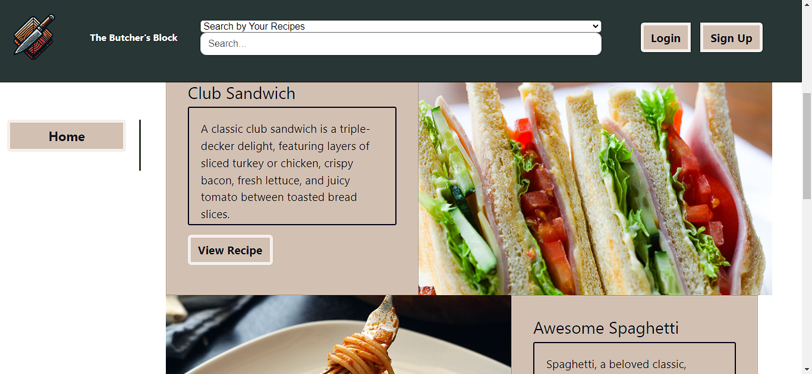

-
Full Course Info
Click for
Certificate of Course Completion
Full Course Github Repo - Click to visit
-
Recipe App Live
Recipe App Heroku Site - Click to visit

This project was an opportunity to explore Django’s straightforward and efficient development process.
The focus was on designing a solid data model first, ensuring that the core logic—the “brain” of the
application—was well-structured before building out the user interface. Django’s built-in ORM made
managing database relationships seamless, while its automatic admin panel streamlined early testing and
data management.
The application was thoroughly tested using Django’s built-in testing framework, allowing for reliable
validation of features and ensuring a smooth user experience. PostgreSQL was used for production and
SQLite
was used for local testing. Pandas and Matplotlib enabled data analysis and
visualization. Deployment on Heroku, supported by dj-database-url, psycopg2-binary, gunicorn, and
whitenoise, ensured a scalable and efficient hosting solution. Additionally, Pillow was integrated for
handling user-uploaded images.
Django’s simplicity and robust features made the development process smooth, allowing for rapid
iteration and thorough testing at each stage.
Technologies used: Python, Django, JS, CSS, HTML, Heroku, Postgres, SQLite, Pandas, Matplotlib,
dj-database-url, psycopg2-binary, gunicorn, whitenoise, pillow
Github Repo - Click to visit
-
Practice Bookstore Live
Developed a practice project to explore Django's Model-View-Template (MVT) architecture, user
authentication, and data analytics. Acquired proficiency in key Django features, including the admin
interface, migrations, and implementing authorization for views and templates.
Technologies used: Python, Django, JS, CSS, HTML, Heroku, Postgres, SQLite, Pandas, Matplotlib,
dj-database-url, psycopg2-binary, gunicorn, whitenoise,
pillow.
Githup Repo - Click to visit
-
Recipe Console App
Developed a recipe console application that allows users to manage their favorite recipes while
exploring the fundamentals of structuring a Python application. Using Python’s object-oriented features,
I organized the app with classes for better modularity and maintainability. SQLAlchemy provided a
flexible way to interact with databases, while MySQLclient and SQLite offered different storage options
to experiment with. IPython enhanced the development process with its interactive shell, making
debugging and testing more efficient. Setting up a virtual environment ensured dependency management and
project isolation, reinforcing best practices for maintaining clean and portable Python applications.
Technologies used: Python, SQLAlchemy, MySQLclient, Ipython, SQLite.
Github Repo - Click to visit